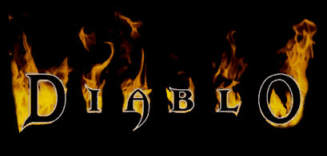

DIABLO 1 HD: Belzebub
HTML Documentation v2.0

WHAT YOU SHOULD BE AWARE OF:
This is the second Documentation release, and it contains what i and members of the community have noticed, future releases of the Documentation will contain more precise and complete information. And i think it should work well in most of the modern browsers.
CHANGES:
- Completed the exact range for Armor Class in the Base Armor pages and verified the range for Base Weapon types.
- Completed the exact range for all affixes and set bonuses on the Unique Items page and Set items page.
- Added some missing items on the Unique Items page (the ones without pics because i don't have them yet).
- Made gifs for all animated items (i hope i didn't miss any).
- Various changes and corrections to the docs format for easier use.
WHAT ELSE NEEDS TO BE DONE:
- Correcting anything that is wrong.
- Finding out the Bonus number for regular Potions according to each character.
- Reaching the Required Magic of learning a couple of the high end spells, some 13-15 levels.
- Doing a propper Spell page with all info on spells and the synergies.
- Knowing the exact bonus of shrines like Experience, Mastery, Protection and Spooky.
- Figuring out the Base Stats and Skill synergies during level progression for all characters.
- Maybe get some gifs for the Armor Looks page, otherwise i'll just put some static images.
- Adding the Weapon Speed and precise Attack Time value for all base weapon types, i just need a couple of white weapons.
- Hopefully a Prefixes & Suffixes list, thou i don't know how and i'll most likely guestimate, like i did on Crafting Recipes page.
- Completing the Crafting Recipes page, also with all the Required Levels to learn them, when i find more recipes.
- Making a Bestiary with images and description of skills, being a monumental chore that i will take on last.
HELP
If you see anything that's incorrect, incomplete or ill-formatted, please help by posting it on the forum so it can be corrected!
THANKS
I wish to thank:
- BrightLord and Noktis for making and hosting this awesome mod
- Constance for sugesting size optimization of pics
- ROLpogo for reporting a mistake and posting his range of some unique items
- Nikko635 for pulling game data (several times) with the exact range for all items
- Daimoth for sugesting gif tool
- the whole community for the support, reporting errors and suggestions
- you personally for reading all the way down!
- kambala and Quirinus for compiling the Median XL docs which i used as a template
Previous version splash page.